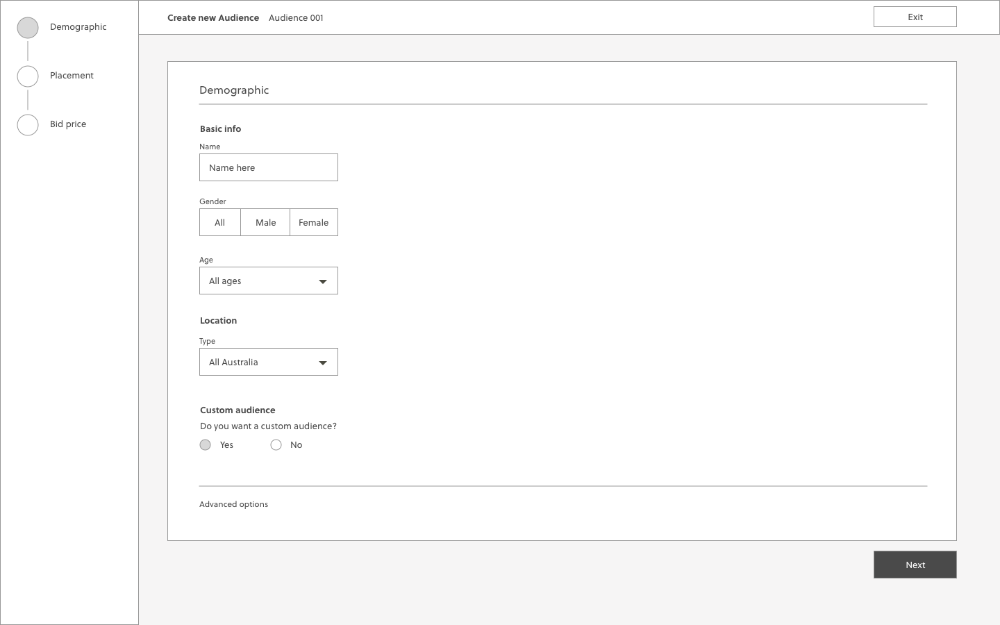
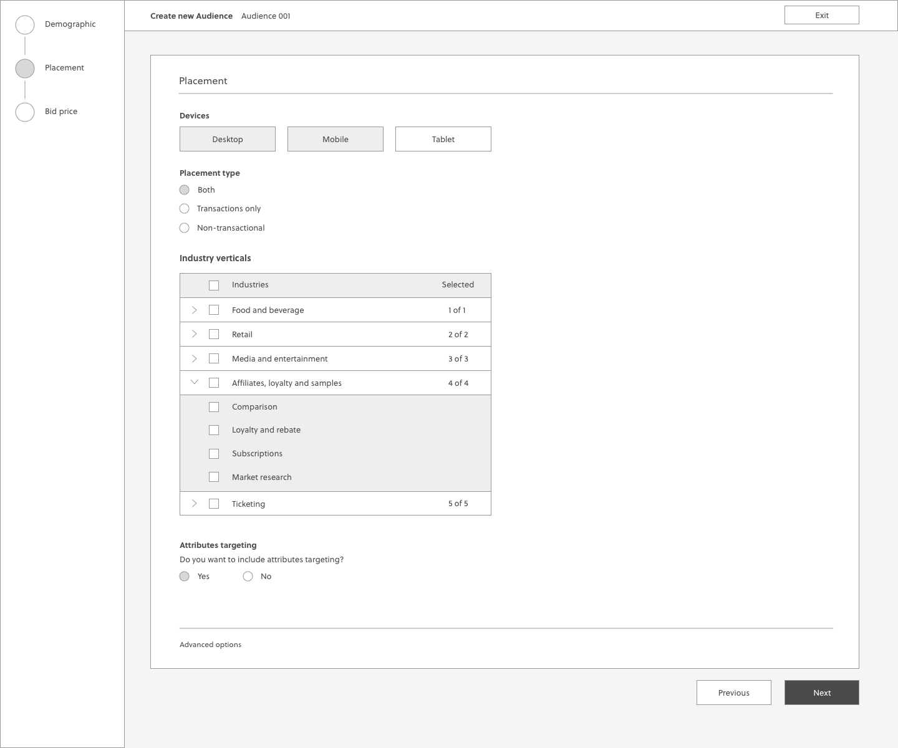
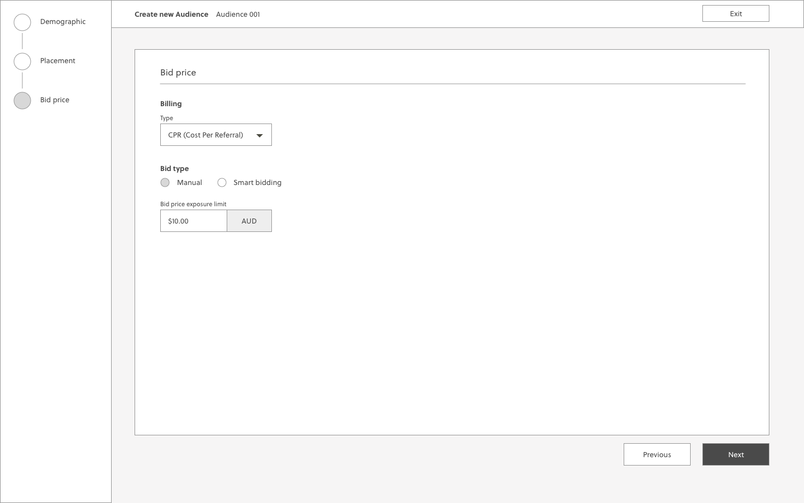

GlucoEase: Diabetes Management Tool
OVERVIEW
ROLE
GlucoEase is a diabetes management and prevention app, paired with a smart medication dispenser that supports diabetic and pre-diabetic users in managing blood glucose, medications, and exercise.
Product Designer
User Research, Interaction, Visual design,
Prototyping & Testing
August - November 2024
Understanding the problem
Diabetes has become a major public health challenge in Australia, as evidenced by data showing that approximately 1.5 million Australians, which is about 5.6% of the total population, are currently living with this chronic disease.
"In Australia (2024), diabetes affects about 1.5 million people and is projected to impact over 3 million by 2050." - The Australian Institute of Health & Welfare
Problem Statement:
Our task was to create a product that helps diabetic and pre-diabetic users maintain a healthy lifestyle.
Our goal was to ensure it not only offers extra support and accountability
for those who may struggle with managing their condition independently, but is also user-friendly for individuals of all ages.
Our approach to this problem was to design a personalised and customisable service
that addresses the lack of diabetes management and medication adherence in Australia.
Gathering insights
As our team explored how to gather insights that would provide the necessary context for designing a solution to our problem,
I identified that our stakeholders were not only people living with diabetes but also healthcare providers
who regularly interact with them. This realization led me to interview diabetic patients (both Type 1 and Type 2)
as well as multiple professionals working in the Australian health sector, including doctors, pharmacists, and physiotherapists.
On one hand, patients shared their firsthand experiences with treatments, challenges, and daily care,
while healthcare providers offered clinical insights into treatment options, patient education, and systemic barriers.
The two perspectives gives us a more holistic approach to understanding diabetes management,
helping us identify key challenges, improve patient support, and develop more effective,
practical solutions tailored to both medical and daily life needs.
After collecting the recordings from the user interviews,
I conducted affinity mapping with my teammates to synthesise the pains identified.
We grouped these problems under common themes and features in the platform.

Key insights
Current Diabetes monitoring requires constant attachment and painful testing procedures, which leads to discomfort, and risks of device inaccuracy or malfunction.
Non-compliance: Some patients avoid glucose testing due to pain, stress, or fear of results.
Monitoring is essential: Patients are advised to check blood sugar levels 3 times a day, but many don’t.
Physicians solely rely on HbA1c tests and self-reported data, but there is no direct way to ensure adherence to lifestyle changes.
Social support from family and friends drastically improves patient engagement.
Lack of education & awareness: Most people do not understand how serious diabetes complications can be.
Design Approach & Rationale
After gathering research data from surveys and interviews with diabetic patients and health professionals,
we concluded that the most appropriate way to address the aforementioned research insights
would be through a mobile app and a physical medication dispenser .
Not only are phones accessible to people of all ages,
but the mobile app can also serve as a platform
that allows both users and their caregivers to
monitor the patient's health and medication intake. This facilitates the social support
and additional monitoring necessary for the patient
to establish lifestyle habits and changes that
increase adherence to medication and improve the patient’s diabetes management.
In addition, the physical medication dispenser would complement the app by integrating real-time connectivity
to enable adherence tracking.
Its key functions include automated dispensing,
organizing multiple medications by type, dosage, and time, and
providing real-time visual, auditory, and tactile alerts,
along with smartphone reminders for missed doses.
Additionally, it offers refill reminders and expiration alerts,
improving medication management beyond standard dispensers.
This feature is especially beneficial for elderly patients, who represent a significant demographic.
Furthermore, a mobile app or website alone is insufficient to effectively address the challenges of diabetes management because diabetes is a condition that requires consistent monitoring, timely medication intake, and behavioral adherence. While digital platforms can provide valuable tracking, reminders, and educational resources, they lack the ability to physically dispense medication or ensure adherence beyond notifications.
Personas
Based on our research, we recognised that there were three key user types that our product aimed to address. We also decided to create a user journey map in order to visualise each user’s experience, identify pain points, so that our solution would effectively meet their needs.
High-Fidelity prototype
Colour Palette

Design System
Wireframing the solution
Based on the above problems identified, I worked towards addressing these pains
by coming up with potential solutions:
- Reducing the number of steps to minimise time to completion
- Surfacing mandatory fields and enabling the Next button to show error validation
- Establishing clearer visual form hierarchy by grouping related fields
- The lack of a formal wizard component also meant that I had to come up with a standardised styling
and UI pattern for future wizards
I quickly mocked up some basic wireframes to gather feedback from Product,
Engineering and the users on the overall layout and structure of the wizard form. This involved
establishing a standardised visual hierarchy and layout for the future wizard component.

Validating the designs
I conducted usability testing sessions with our primary users to validate whether
the new designs would solve their problems. I wrote a script including a scenario asking the user to
create a new Audience targeting females of all ages on mobile devices with manual bidding enabled.
During the session, I observed how they interacted with the prototype and set up the Audience.
The usability session revealed that it was less arduous to set up a new Audience due to the grouping of
related fields. It was easier for the user to identify which forms they had to fill, as advanced
settings were now hidden under a collapsable toggle.
Developing the designs
I created my high fidelity mockups in Sketch and then imported them into Invision
to allow the engineers to inspect the file and export the HTML and CSS code.
I worked
very closely with the Front End team to spec out any missing interactions that were not covered in the
high fidelity mockups. I conducted a UX review of each front-end ticket that was implemented to
ensure it was aligned with the designs before it went live.
Results and takeaways
Since the implementation of the new rebuild of the Audience Wizard, we have seen
a significant decrease in the number of complaints lodged through the service desk. Additionally,
I have received positive feedback from users about the simplified configuration of their Audiences,
saving them a large proportion of their time.
Some key takeaways from this project are:
- Create a strategic plan to launch an MVP. This helps deal with out-of-scope
requests that could potentially derail the project and helps deliver a quality product in time.
- User testing doesn't end after development. Design is a constant iteration of
improving the experience for the end user. Always find ways to collect and listen to your user's
feedback.
- Involve engineering upfront. This helps to reduce any rework later on as an
understanding of the technical limitations upfront will help to inform your design strategy.